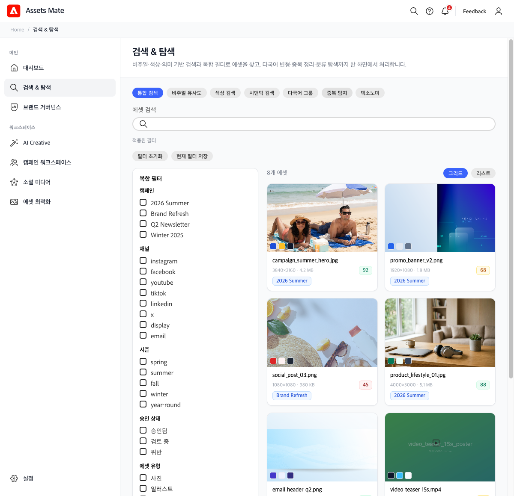
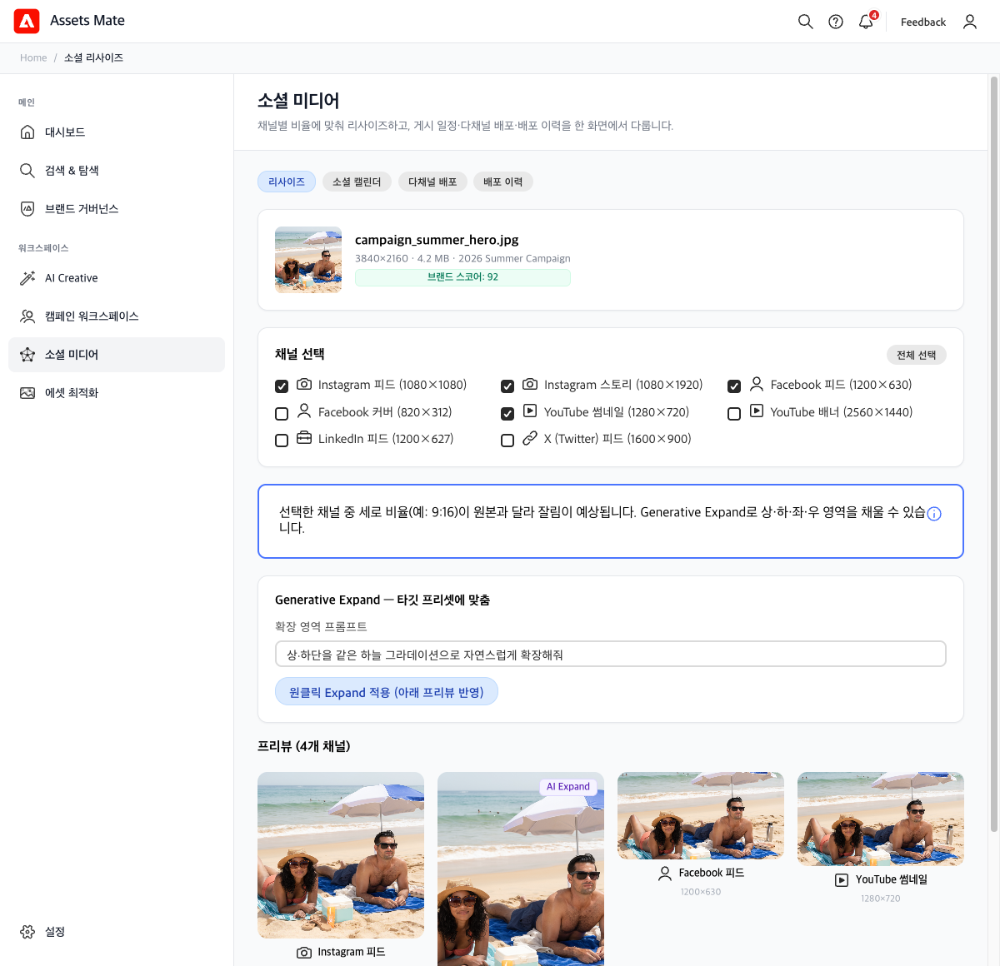
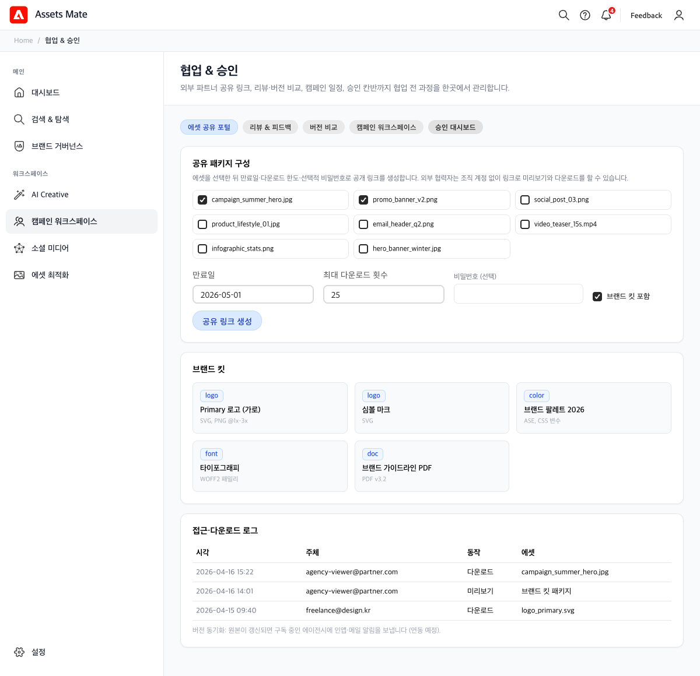
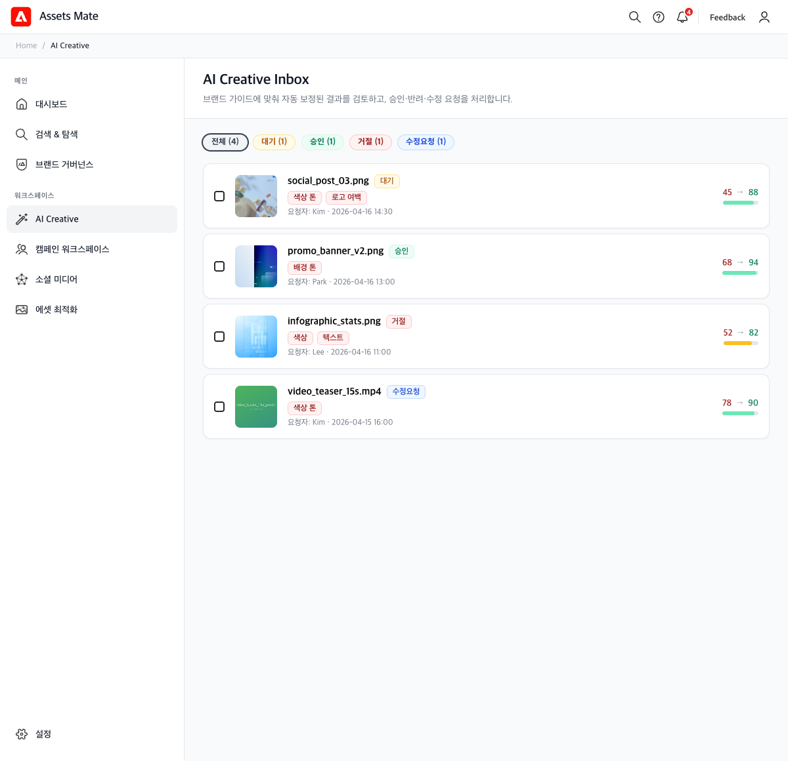
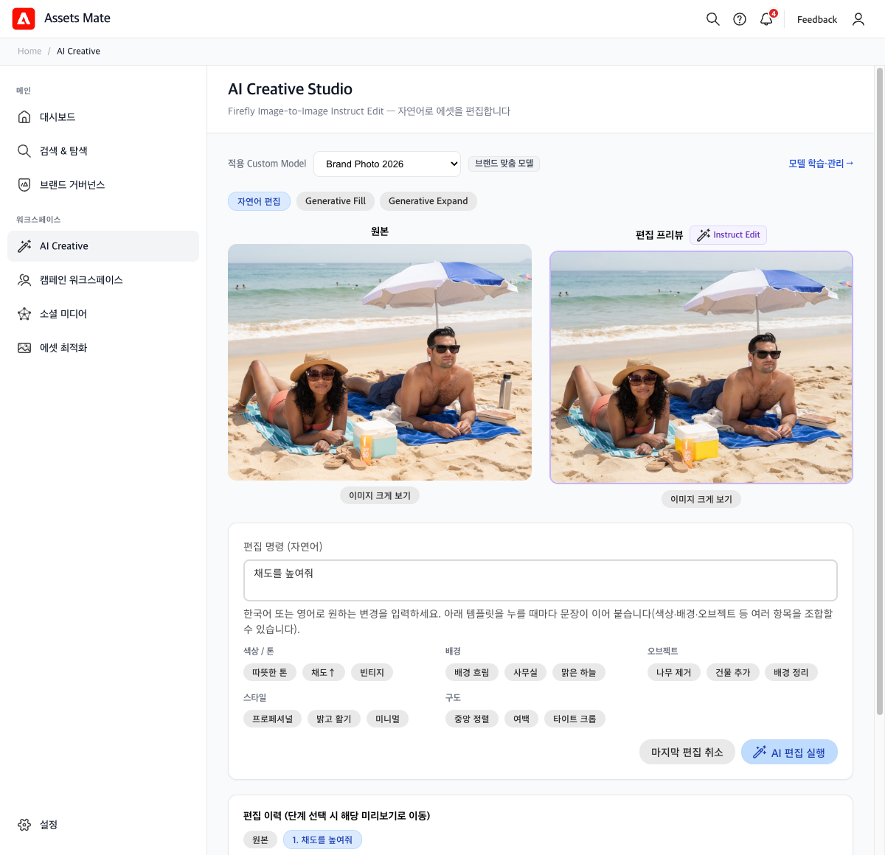
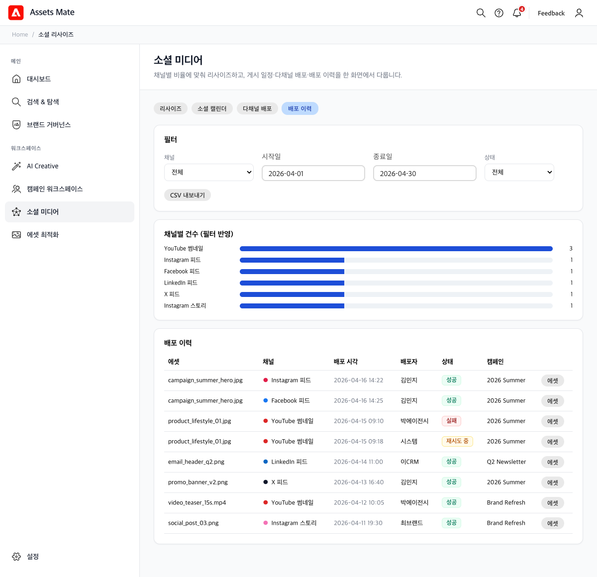

Assets Mate — 마케터 / 콘텐츠 매니저 니즈
A
Assets Mate
캠페인 탐색부터 브랜드 검증, AI 보정·자연어 편집, 협업 승인, 채널 리사이즈·배포 이력까지 한 흐름으로 보여 주는 화면입니다.

주제 1
캠페인에 맞는 에셋을 빠르게 찾기
- 필터 검색과 비주얼·시맨틱 검색, 복합 필터로 캠페인·채널·승인 상태까지 조합해 원하는 에셋만 좁힙니다.
- 그리드·리스트 전환과 브랜드 점수 배지로 후보를 빠르게 스캔합니다.

주제 2
채널별로 한 번에 리사이즈
- 한 장의 히어로 에셋을 인스타·페이스북·유튜브 등 프리셋 비율로 일괄 생성합니다.
- 비율 차이가 클 때는 Generative Expand 프롬프트로 여백을 채우는 흐름을 안내합니다.

주제 3
에이전시 시안을 효율적으로 리뷰·승인
- 외부 파트너 공유 링크, 브랜드 킷 포함, 만료·다운로드 제한으로 시안 패키지를 통제합니다.
- 접근·다운로드 로그로 누가 어떤 에셋을 받았는지 추적합니다. (같은 허브에서 리뷰·칸반 탭으로 확장 가능)

주제 4
브랜드 가이드라인이 지켜지는지 확인
- 색상·로고·폰트·레이아웃 항목 스코어와 종합 브랜드 건강도를 한 화면에 봅니다.
- 위반 에셋·만료 임박 라이선스·기간별 추이로 리스크를 운영 관점에서 관리합니다.

주제 5
브랜드 위반 에셋을 디자이너 없이 AI로 빠르게 수정
- 자동 보정 결과를 Inbox에서 검토하고 승인·거절·수정 요청을 처리합니다.
- 위반 유형 태그와 보정 전·후 점수로 개선 폭을 숫자로 확인합니다.

주제 6
자연어로 간단한 에셋 수정을 직접 하기
- Firefly Instruct Edit에 해당하는 자연어 명령과 템플릿 칩으로 빠르게 프롬프트를 구성합니다.
- 실행 후 원본 옆 편집 프리뷰·이력·가드레일로 한 번에 검증합니다.

주제 7
여러 채널에 배포하고 이력을 관리
- 채널·기간·상태로 배포 이력을 필터하고 CSV로 내보냅니다.
- 채널별 건수와 표에서 성공·실패·재시도, 캠페인 단위까지 추적합니다.